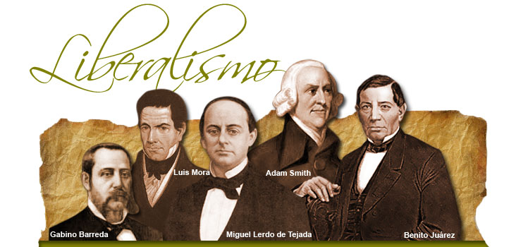

" LIBERAE SUNT NOSTRAE COGITATIONES."
Liberalismo VS Libertarismo
Aunque conocía que la palabra “libertario” en U.S.A. (en inglés “libertarian”) tenía una connotación diferente al que le solemos dar en Europa, no fue hasta la lectura de un anodino comic de Peter Bagge que me animé a analizar más esa diferencia. Cuando nos referimos a un “liberal” estamos hablando de una persona que se siente miembro de la tradición iniciada por John Locke y Adam Smith. Según esta línea de pensamiento el estado tiene como único fin proteger los derechos individuales de los miembros de la sociedad; el mejor estado es el que menos interviene. El liberalismo clásico es reacio a un estado fuerte y a gravar con altos impuestos a los ciudadanos; sin embargo tanto en Europa como en EE.UU. el término “liberal” ha perdido su antigua connotación ya que los partidos teóricamente liberales (como el partido republicano en EE.UU. o el P.P. en España) se han aliado con corrientes ideológicas conservadoras que traicionan la misma esencia del liberalismo. Efectivamente, mientras que el liberal es muy celoso en la defensa de los derechos individuales, los conservadores se creen en el deber de “moralizar” a la sociedad según su particular perspectiva.
El dilema que se le plantea tanto al libertarista como al libertario es de qué manera y quién va a evitar las prácticas monopolistas y el enriquecimiento desmedido e ilegítimo. El libertarismo, que cree en el estado mínimo, puede considerar que una de las pocas funciones del estado es precisamente defender al individuo frente a las prácticas monopolistas y acumulativas que pongan en riesgo su libertad. El movimiento libertario, que no cree en el estado en absoluto, promueve otro tipo de economía y empresa distinta a la capitalista, este tipo de tejido productivo, cooperativista y reticular, impediría, por sí mismo, los monopolios y el enriquecimiento desmedido. Al mismo tiempo, y en esto el libertario y el libertarista coinciden, las asociaciones de individuos concienciado serían un importante freno para las prácticas empresariales lesivas a la libertad individual.

El conservador NO es liberal
Para conseguir esto los conservadores no dudan en fomentar leyes irrespetuosas con los derechos individuales o en fortalecer el estado para inculcar su proyecto ideológico en la población. Por contra, un liberal estricto considera que los comportamientos privados (religión, consumo de drogas, sexualidad, posesión de armas…) no deben ser perseguidos si no son un riesgo objetivo y actual para el cuerpo social. Como dije, la alianza entre liberales y conservadores ha menoscabado profundamente la esencia antiestatalista del liberalismo.